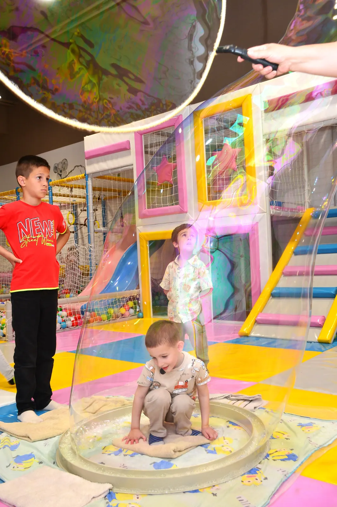

Blog · Saveti
Gde sa decom u Kragujevcu kad pada kiša?

Kada napolju pada kiša, kada je zima ili kada leti temperatura pređe 35 stepeni, park nije opcija. A deca i dalje imaju energiju koju moraju negde da potroše. Evo nekoliko ideja šta raditi sa decom u Kragujevcu kada vreme nije za napolje.
1. Zatvorena igraonica
Najlakše rešenje za decu koja moraju da trče i penju se. Dobra igraonica ima tobogane, avantura stazu, bazen sa lopticama i poseban deo za bebe, a roditelji mogu da sednu uz kafu. Bitno je da je klimatizovana, jer je tada prijatna i zimi i usred leta.
2. Gradska biblioteka i dečje radionice
Dečje odeljenje biblioteke i radionice za decu su odličan miran program, posebno za decu koja vole slikovnice i crtanje. Pratite najave na njihovim stranicama.
3. Pozorište i bioskop za decu
Dečje predstave i crtani filmovi u bioskopu su dobar izbor za vikend. Proverite repertoar unapred, jer se karte za popularne predstave brzo rasprodaju.
4. Tržni centar uz plan
Šetnja tržnim centrom brzo dosadi deci, ali ako je u njemu igraonica, dan se lako organizuje: deca se igraju, a vi obavite kupovinu.
Igraonica Milutin i Milica u TC Roda
Naša igraonica je na drugom spratu TC Roda: preko 300 m² za igru, klimatizovano, nepušački i sa besplatnim parkingom. Radimo svakog dana od 09 do 21h, igranje je 450 din po satu, a ako treba da obavite nešto bez deteta, tu je i čuvaonica za 500 din po satu.
Imate pitanje? Pozovite nas.
Igraonica i čuvaonica Milutin i Milica · TC Roda, 2. sprat · svakog dana 09–21h